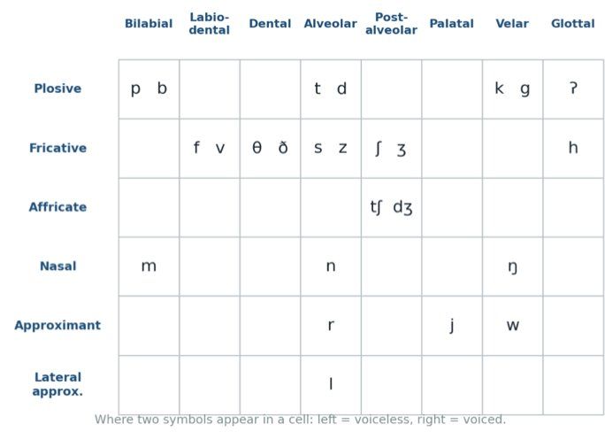

S1 · Medical English · Corrective & Articulatory Phonetics 1 · Summary
Lecture 3 — English consonants
If you remember only this
- Every consonant is described by 3 parameters: place (where the airstream is obstructed), manner (how), voicing.
- 24 consonant phonemes in English, at 8 places: bilabial, labiodental, dental, alveolar, post-alveolar, palatal, velar, glottal.
- Manners: plosive (closure + sudden release), fricative (narrow gap, friction), affricate (plosive closure + fricative release), nasal (lowered velum), approximant incl. lateral (slight narrowing, no friction).
- Voiceless/voiced pairs: /p–b/, /t–d/, /k–g/, /f–v/, /s–z/, /θ–ð/. In the chart, left = voiceless, right = voiced.
1.1 Place of articulation — where p. 2
| Place | Articulators | Consonants |
|---|---|---|
| Bilabial | Both lips | p b m (w) |
| Labiodental | Lower lip + upper teeth | f v |
| Dental | Tongue + upper teeth | θ ð |
| Alveolar | Tongue + alveolar ridge | t d s z n l |
| Post-alveolar | Tongue + area just behind the alveolar ridge | ʃ ʒ tʃ dʒ r |
| Palatal | Tongue + hard palate | j |
| Velar | Tongue back + soft palate | k g ŋ (w) |
| Glottal | The vocal folds themselves | h |
1.2 Manner of articulation — how p. 2
| Manner | What happens | Consonants |
|---|---|---|
| Plosive | Complete closure, then sudden release | p b t d k g |
| Fricative | Narrow gap → audible friction | f v θ ð s z ʃ ʒ h |
| Affricate | Plosive closure + fricative release | tʃ dʒ |
| Nasal | Lowered soft palate, air through the nose | m n ŋ |
| Approximant (incl. lateral) | Only slight narrowing, no audible friction | r j w · lateral: l |
1.3 Voicing p. 2
Voiced = vocal fold vibration; voiceless = none. Pairs with the same place and manner: /p/–/b/, /t/–/d/, /k/–/g/, /f/–/v/, /s/–/z/, /θ/–/ð/ (also /ʃ/–/ʒ/, /tʃ/–/dʒ/ in the table).
2. The English consonant chart p. 3

Chart vs table in the PDF
The chart puts /r/ in the alveolar column, /w/ under velar only, and adds a glottal plosive /ʔ/; the table (Table 1) calls /r/
post-alveolar approximant, /w/ bilabial-velar approximant, and lists 24 phonemes without /ʔ/. For the exam, follow the table's labels.
3. All 24 consonants with example words p. 3–4
| IPA | Description | Word |
|---|---|---|
| /p/ /b/ | bilabial plosive, voiceless / voiced | pulse /pʌls/ · blood /blʌd/ |
| /t/ /d/ | alveolar plosive, vl / vd | tissue /ˈtɪʃuː/ · dose /dəʊs/ |
| /k/ /g/ | velar plosive, vl / vd | cough /kɒf/ · gland /ɡlænd/ |
| /f/ /v/ | labiodental fricative, vl / vd | fever /ˈfiːvə/ · vein /veɪn/ |
| /θ/ /ð/ | dental fricative, vl / vd | thorax /ˈθɔːræks/ · this /ðɪs/ |
| /s/ /z/ | alveolar fricative, vl / vd | sternum /ˈstɜːnəm/ · nose /nəʊz/ |
| /ʃ/ /ʒ/ | post-alveolar fricative, vl / vd | shoulder /ˈʃəʊldə/ · measure /ˈmeʒə/ |
| /h/ | glottal fricative, voiceless | heart /hɑːt/ |
| /tʃ/ /dʒ/ | post-alveolar affricate, vl / vd | chest /tʃest/ · jaundice /ˈdʒɔːndɪs/ |
| /m/ /n/ /ŋ/ | bilabial / alveolar / velar nasal | mouth /maʊθ/ · nurse /nɜːs/ · lung /lʌŋ/ |
| /l/ | alveolar lateral approximant | liver /ˈlɪvə/ |
| /r/ | post-alveolar approximant | rash /ræʃ/ |
| /j/ | palatal approximant | yawn /jɔːn/ |
| /w/ | bilabial-velar approximant | wound /wuːnd/ |
Spelling traps in the examples "th" = /θ/ in thorax but /ð/ in this · "ss" in tissue = /ʃ/ · "s" in measure = /ʒ/ · "j" in jaundice = /dʒ/ · "ng" in lung = one sound /ŋ/ · "y" in yawn = /j/.
Self-check
What are the 3 parameters for classifying a consonant?
Place, manner, voicing.
Describe /g/ (gland), /ʃ/ (shoulder), /m/ (mouth), /dʒ/ (jaundice), /l/ (liver).
Voiced velar plosive · voiceless post-alveolar fricative · (voiced) bilabial nasal · voiced post-alveolar affricate · alveolar lateral approximant.
Plosive vs affricate?
Plosive: closure + sudden release. Affricate: plosive closure + fricative release (tʃ, dʒ).
What distinguishes an approximant from a fricative?
Approximant: only slight narrowing, no audible friction; fricative: narrow gap with friction.
Which place uses the vocal folds themselves?
Glottal (/h/).
Transcribe: pulse, cough, nurse, chest.
/pʌls/ · /kɒf/ · /nɜːs/ · /tʃest/.
In the chart, which symbol of a pair is voiced?
The right-hand one.